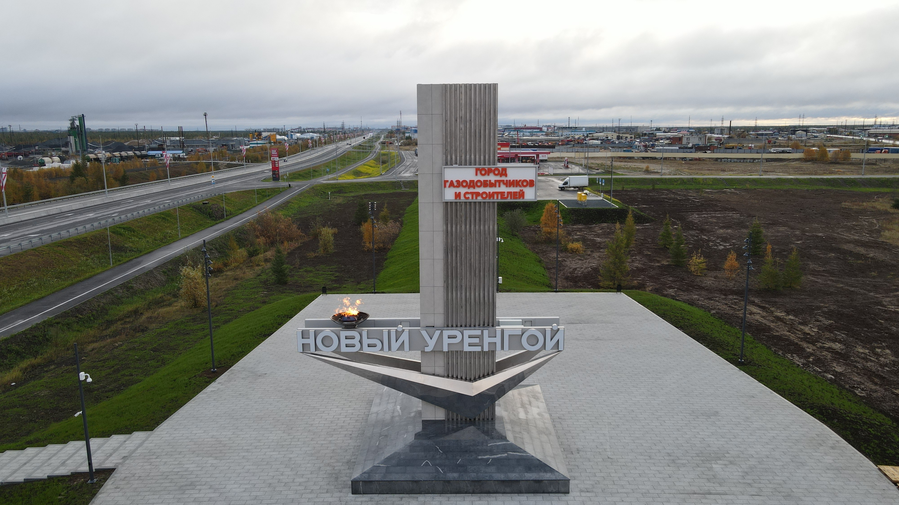

круговая развязка около Аэропорта
Более 40 лет городская стела не меняла своего местоположения. В начале 2000-х ее обновили, оставив только каркас, а в 2020-м году демонтировали в связи со строительством развязки «Солнечная», которую открыли в сентябре 2021 года. Место установки обновлённой стелы выбрали неслучайно – улица осталась та же – Магистральная, только теперь визитная карточка Нового Уренгоя будет встречать и провожать всех жителей и гостей газовой столицы на кольце у аэропорта.
Новая стела вдвое выше своей предшественницы, установленной в сентябре 1979 году. Ее высота 16 метров. Обновлены и материалы, из которых выполнена историческая конструкция – металлический каркас заменили на более прочный монолитный железобетон. Обшивка выполнена из нержавеющей стали и натурального камня. Изюминкой обновленного объекта стала архитектурная подсветка из 200 световых огней, интегрированная в стелу. Символический «синий цветок» на новой стеле заменили на настоящий огонь. Высота пламени от газа составит порядка полутора метров. К городской стеле обустроен подъезд, прогулочные тропинки.

{kind=link}